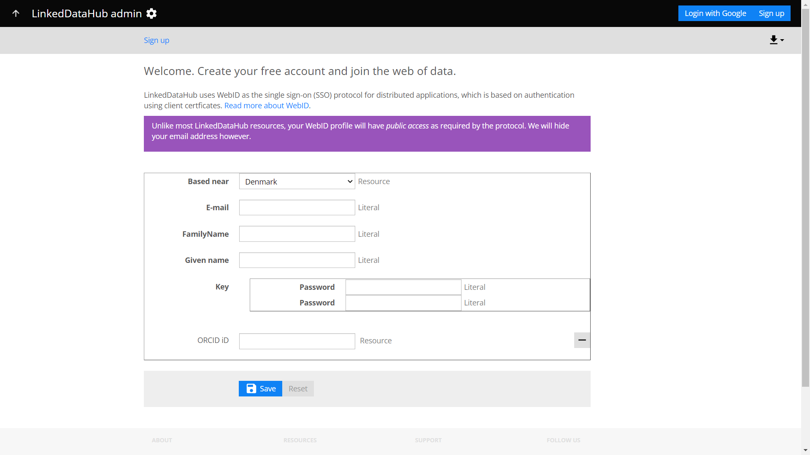

Get an account
This guide describes how to login to LinkedDataHub.
In order to authenticate as the owner of a LinkedDataHub instance, you need to use the WebID authentication method.
Get certificate
LinkedDataHub uses WebID as the Single sign-on (SSO) protocol for distributed applications, which is based on authentication using TLS client certficates. Using WebID, you will be able to authenticate with every LinkedDataHub application. Read more about WebID.
There are two ways to get a LinkedDataHub WebID: setup and signup.
Complete the setup and run own an instance of LinkedDataHub.
The ssl/owner/keystore.p12 file is your WebID certificate. The password is the owner_cert_password Docker secret value.
Sign up to an existing instance of LinkedDataHub. Click the Sign up button and fill out the form with your details to get a WebID, as shown below.

You will get an email with a .p12 file attached, which is your WebID certificate. The certificate's password is the one you entered in the signup form.
You'll need a PEM version of the certificate for use with the command line interface scripts. During setup, it is stored under ssl/owner/cert.pem. If you got the certificate by email, you need to convert the PKCS12 file to PEM using OpenSSL.
Unlike most LinkedDataHub resources, your WebID profile will have public access as required by the protocol. Your email address will be hidden however.
Install certificate
The final step is to install the client certificate into your web browser. It is done by importing the .p12 file using the browser's certificate manager and providing the password that you supplied during signup. The manager dialog can be opened following the steps below, depending on which browser you use:
- Google Chrome
- Settings > Advanced > Manage Certificates > Import...
- Mozilla Firefox
- Options > Privacy & Security > View Certificates... > Import...
- Apple Safari
- The file is installed directly into the operating system. Open the file and import it using the Keychain Access tool. Drag the .p12 file to the login section.
- Microsoft Edge
- Does not support certificate management, you need to install the file into Windows. Read more here.
You need to install the certificate on all devices/browsers that you are using to access LinkedDataHub.
Log in
Open the URL of the LinkedDataHub instance in the web browser (that you installed the WebID certificate into). Using a local setup, it runs on https://localhost:4443/ by default.
With the certificate installed, there is no login procedure — you are automatically authenticated on all LinkedDataHub applications. This is known as Single sign-on (SSO).
Applications can provide public access to some or all documents, meaning you can freely browse their public resources and perform actions that are allowed for public access. In order to access protected (non-public) resources, as well as to access administration application, users have to be authenticated as well authorized (authorizations can be requested).
Authenticated agents are not guaranteed to have access to all resources. Different access levels for different agents can be specified by the application administrators.
Click the Login with Google button in the navbar to authenticate with your Google account.
If the email address of your Google account matches the dataspace owner's email address that was specified during setup, you will be authenticated as the owner with full control access rights.
Login with Google is only enabled if LinkedDataHub was configured with social login.
Are you in? Then continue the get started guide or take a look at the UI overview.